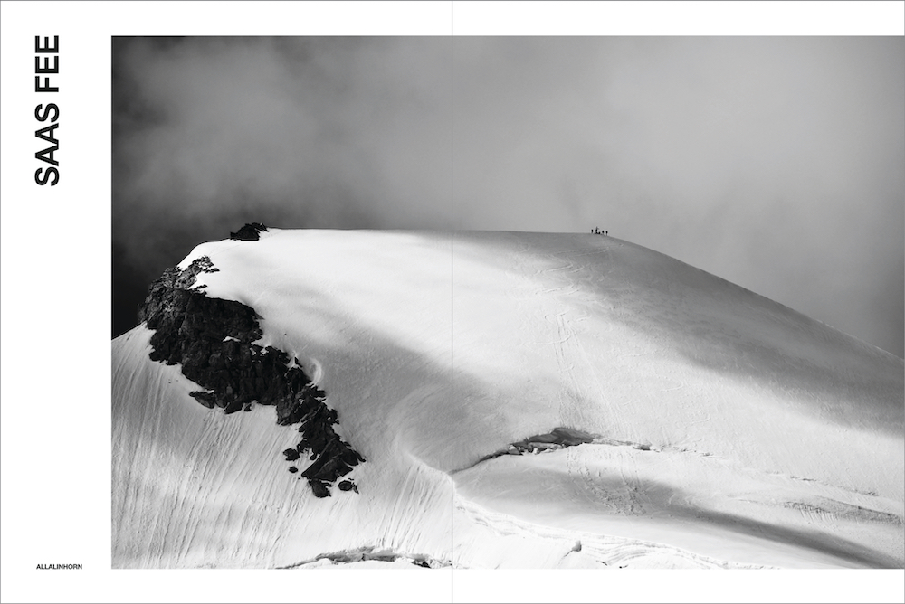
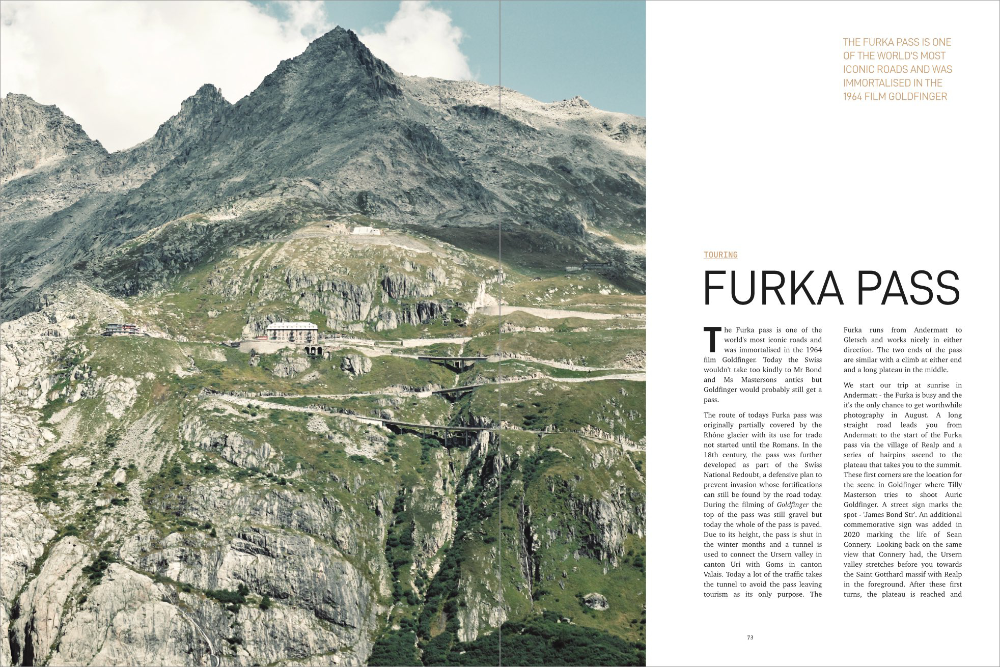
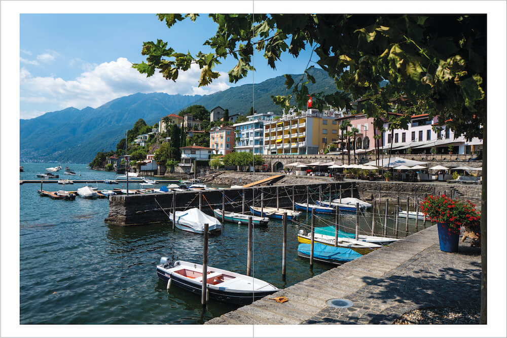
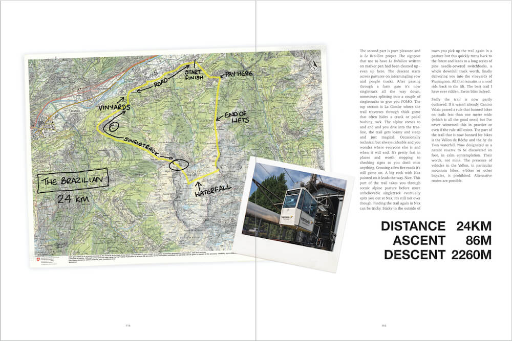

Switzerland
Super Alpine magazine Issue 04
In Issue 04 of the Super Alpine magazine we visit Switzerland. We head to the highest part of the Confederation - Valais and cherry-pick some of the less travelled aspects of this fascinating country, straying into Bern, Uri, Ticino and Fribourg.
Featuring: Crans Montana, Simplon Pass, Lac de Moiry, Zermatt, Andermatt, Susten pass, Grimsel pass, Furka pass, Goldfinger, H.R Giger, Ascona, Le Brésilien and Saas Fee.





- 195 × 260 mm (7.6 by 10.2 inches)
- 124 pages
- Over 120 photographs
- 6 maps
- 300gsm soft touch laminated cover
- 120gsm uncoated inside pages
- Printed and bound in the United Kingdom on sustainably sourced paper and vegetable-based inks
- No adverts
Coming October